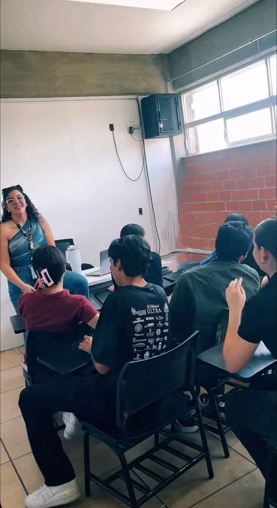
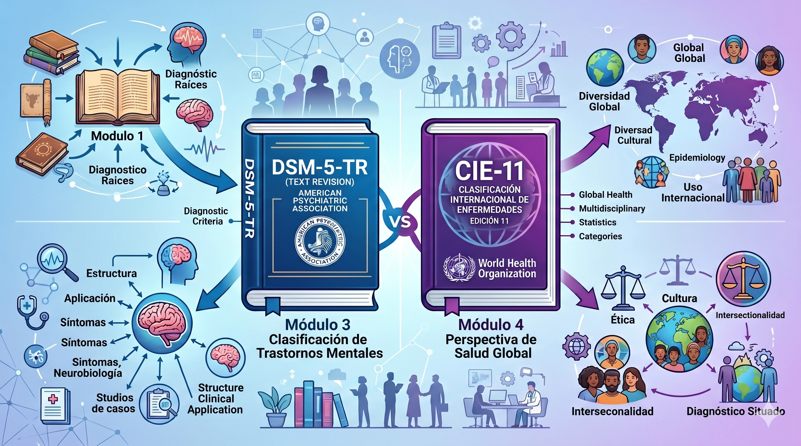

Caso 01 · Formación docente
Habilidades del Siglo XXI
Diseño y facilitación de una experiencia para comprender la realidad adolescente e integrar comunicación, colaboración, pensamiento crítico y creatividad en Educación Media Superior.
Ver caso →Casos
Una selección de proyectos de formación docente, diseño instruccional y tecnología educativa documentados desde el problema, las decisiones de diseño y los aprendizajes obtenidos.
Caso 01 · Formación docente
Diseño y facilitación de una experiencia para comprender la realidad adolescente e integrar comunicación, colaboración, pensamiento crítico y creatividad en Educación Media Superior.
Ver caso →
Caso 02 · Lengua Extranjera
Diseño de experiencias activas y recursos digitales para favorecer un uso más significativo del idioma dentro y fuera del aula.
Ver caso →
Caso 03 · Ambientes virtuales
Diseño de un curso mixto para comprender los sistemas diagnósticos desde una perspectiva crítica, ética y contextual, mediante toma de decisiones y análisis de casos.
Ver caso →